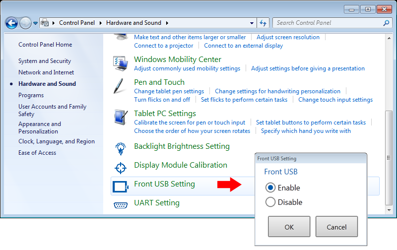

|
|
|
|
|
|
|
|
The Smart Display units on the HMIGTU Series are equipped with front USB ports. For more information on the specific target models that support front USB ports, see Appendix 5, Hardware Specifications.
In order to use the front USB ports, this feature must be enabled in the Editor. For more information, see Enabling the Front USB Ports.
At runtime, the operator can use the USB ports to access the target machine with USB cables, USB memory stick, and USB devices, and support the features as described in the following table.
Use USB Ports with... |
To support these features... |
USB
Cables |
|
USB Memory Stick |
|
USB Devices |
|
 Enabling
the Front USB Ports
Enabling
the Front USB PortsTo enable the front USB ports for the Premium Box (HMIG3U):
In the Target's Hardware properties, define the Front USB Ports on Display properties. Set the USB Port (Host) and Mini USB Port (Device) properties to Enabled. For more information on the front USB ports properties, see Section 4.5.1.3, Hardware Settings.
In the Target's General properties, make sure the Preserve Run-Time Data property is not selected. If the property is selected, the target settings in build time will overwrite the target machine settings in runtime. For more information on the Preserve Runtime Data property, see Section 4.5.1.1, General.
Download the project to the target machine, and start run time. For more information, see Section 25.6, Downloading the Project.
To enable the front USB ports for the Open Box (HMIG5U/HMIG5U2/HMIG5U22):
In Windows, go to Control Panel. Select Hardware and Sound.
On the Hardware and Sound page,
select Front USB Settings.
The Front USB Settings dialog opens.
Select Enable. Click OK and restart Windows to apply the change.

Disabling
the Front USB PortsDisable the front USB ports by:
(In the Editor) Removing the check marks in the Front USB Ports on Display properties in the Target's Hardware properties. For more information, see Section 4.5.1.3, Hardware Settings.
OR
(At Run Time) Removing the check marks in the Enable Front USB Ports on Display and Enable Front mini USB Port on Display properties in the Offline Configuration - Option Menu. For more information, see Section 26.3.5, Setting Up Target Machine Options.
Detaching
and Exchanging a Smart DisplayWhen the Smart Display unit is disconnected or exchanged with another Smart Display unit, the settings for front USB ports on the display unit are retained in the Premium Box or Open Box.
When the Smart Display unit is connected, the Premium Box or Open Box writes the front USB ports settings to the display unit at first boot-up. The Runtime system than automatically reboots to apply the changes to the display unit.
When the setting changes are detected, the target machine displays a pop-up dialog box to inform you of the auto-reboot status, and then shortly after that, the user application loads.